1 Setting up Your Environment¶
Nothing fools you into thinking you’re a great coder faster than a toy app. Any architecture looks robust in a TODO app; any state management approach looks revolutionary in a Counter app.
Example apps, toy apps, tutorial apps… They all play important roles in our learning path, but they don’t always reflect the real world.
Fetching and displaying a list of items, for example, was probably one of the first things you learned how to do in Flutter. And you surely nailed it. The problem is, the real world wouldn’t have stopped there; it would’ve kept pushing:
- “What if you add some tags to filter that list?”
- “What if you make it searchable?”
- “What if you allow the user to refresh the list by pulling it down?”
- “What if you cache the items in a local database?”
- “What if you refresh the list automatically when the user signs in?”
- “What if, instead of fetching the whole list at once, you fetch it in batches as the user scrolls?”
No problem. You’d certainly be capable of finding your way through these challenges on your own — Stack Overflow has your back. But then you’d have to ask: “Would your solution be the best way?” Would you still be able to look at your code and feel proud?
That’s why this book exists: To be your survivors’ guide to the real world — a cookbook full of recipes that demonstrate how professionals handle the most common problems in our industry.
This chapter will onboard you by explaining:
- What you’ll build throughout the book.
- What an API key is and how to get yours.
- What compile-time variables are and how to specify them.
- What Firebase can do for you and how to set up its console.
- How to build and run the book’s sample app. Because, yeah, not even runningapps out in the wild is as simple as you might think.
“Welcome to the real world. It sucks. You’re gonna love it.” — Monica Geller, “Friends”.
Throughout this chapter, you’ll work on the starter project from this chapter’s assetsfolder.
Getting to Know the Sample App¶
Right out of the gate, you’ll have the complete app in your hands. That means you won’t have to wait until the last chapter to find out how the app or the codebase will look by the end of this book.
The second chapter’s final project, for instance, is no different from the sixth chapter’s. What changes is the starter project. Each chapter works as an isolated tutorial, starting from a different place to show you how each part of the app is built.
The app in question is WonderWords, an insightful quotes archive. Users can explore, upvote, downvote and mark their favorite quotes. And you thought closing the introduction with a quote was just a lazy cliché!
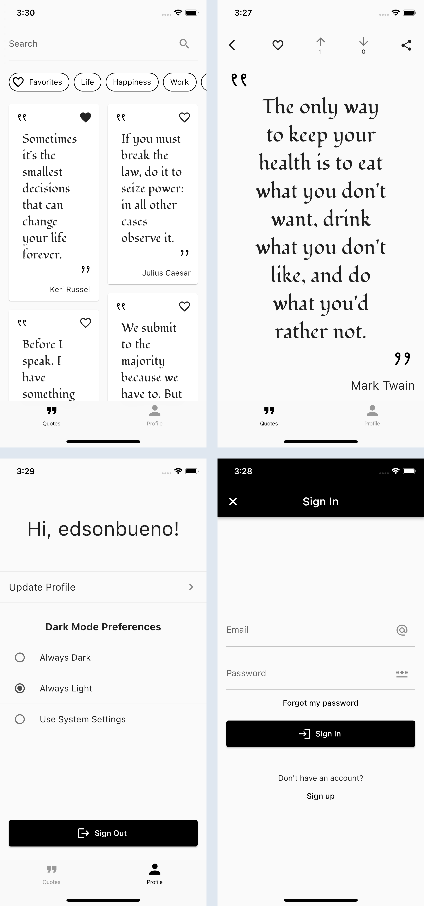
WonderWords has fought — and gracefully won — all the battles real-world apps have to go through: search, pagination, forms, authentication, deep links, internationalization, dark mode, analytics, feature flags, automated tests, CI/CD and more. Your interaction with it will start from the inside out.
Overviewing the Architecture¶
“Talk is cheap. Show me the code,” said the wise man. So kick things off by using your preferred IDE to open the starter project. Then, expand the lib folder.
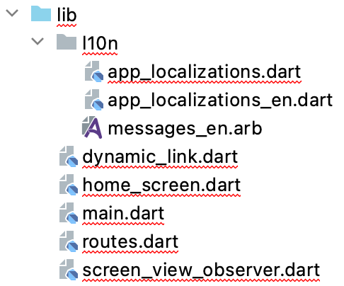
Note
Ignore the errors for now; they’ll go away as soon as you fetch the project’s dependencies in the next section. Don’t try to do that on your own just yet. WonderWords has some particularities that make fetching dependencies a bit different from what you’re probably used to.
Considering this is the complete app, don’t you find it odd that you see only seven Dart files under lib? The explanation lies in the packages folder, which is at the same level as lib. Expand it, and expand a few of its child directories.
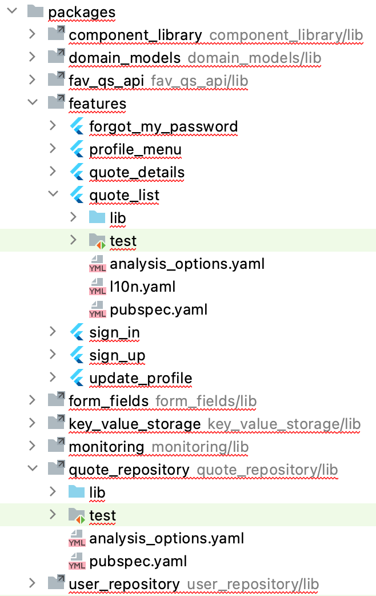
Do you understand now why there were so few files before? The reason is you split the codebase into multiple local packages. Those packages are just like the ones you use from pub.dev, except these are internal to your project. Pretty cool, huh?
Some might think this is “too much” for a small app, or too complex for a less experienced team, but here’s the truth:
- You never know how much an app will grow. It’s extremely common for small apps to end up huge.
- Architecting an app like this makes even more sense for less mature teams. Isolated packages allow you to experiment, make mistakes and have total freedom regarding your patterns, architecture, state management approaches and more.
The list of advantages goes on and on:
- Finer-grained dependency control. Since each package has a separate pubspec.yaml, you don’t have to depend on everything all the time anymore.
- Nice, clean boundaries. Your team has no choice but to be thoughtful about the public classes and functions they create.
- It’s easier to avoid collisions and merge conflicts.
- Shorter continuous integration (CI) running time when changing packages individually. You’ll learn more about this in Chapter 15, “Automating Test Executions & Build Distributions”.
But, of course, it’s not all sunshine and roses. Some routine procedures, like running unit tests, fetching dependencies or running flutter clean, now require you to do them once for each local package. The following section will show you how you can leverage some custom commands to automate those processes for you.
Fetching Dependencies¶
If you’re on Android Studio, open the terminal by clicking the bottom-left Terminal tab:
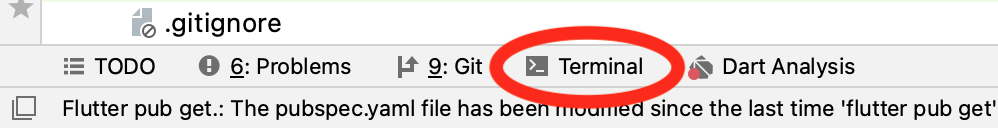
If you’re using VS Code, you can do the same by clicking View ▸ Terminal on the toolbar.
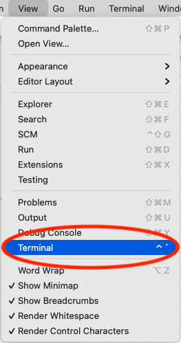
Note
You can always use your preferred standalone terminal app instead of the IDE-integrated one. If you do that, don’t forget to use the cdcommand first to navigate to the root directory of your starter project.
Now, in the terminal tab you just opened, type make get and press Enter. Expect the command to take a while to finish executing.
If you look at your terminal’s output, you’ll notice that all make get does is fetch your project’s dependencies for you via multiple flutter pub get commands, one for each local package. The reason you have this command available to you is the makefilefile located in your project’s root. That’s where the command comes from.
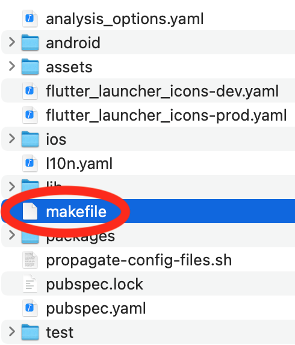
All makefile does is define a few custom commands that come in handy when working with multi-package projects. Feel free to copy-paste and adjust it to any future projects you work on using that same structure.
Learning About Package Arrangement¶
The next thing to point out is how you’re making this package arrangement. What are the criteria for deciding which files belong together? That topic transcends mobile development; the community has been debating it for a while in the old “package-by-layer versus package-by-feature” discussion.
Note
This discussion is also called folder-by-layer versus folder-by-feature. That terminology is more relatable for teams who are either not using internal packages or are using programming languages that don’t support packages.
Package-by-layer¶
Using a package-by-layer structure means you group your files based on their technical aspects. So, for example, your database files get one package, your networking files get another, your widgets another and so on.
This is how WonderWords’ package distribution would look with package-by-layer:
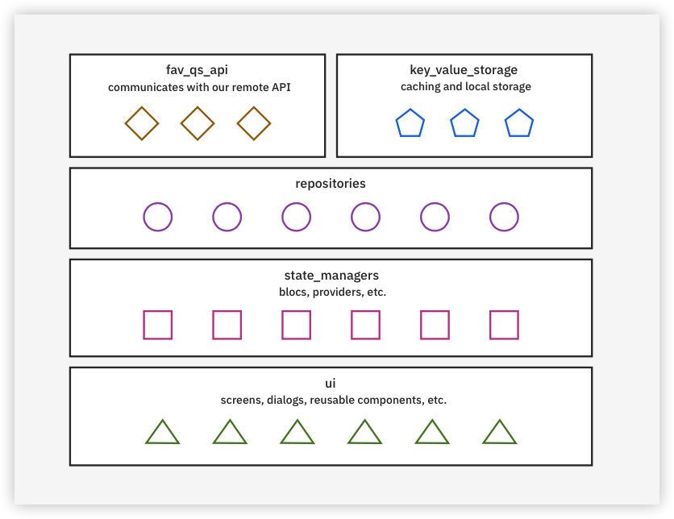
Advantages:
- For some reason, package-by-layer speaks to our nature; it’s how our minds intuitively work. That makes the strongest argument in favor of this approach: there’s a low learning curve.
- It encourages code reuse. Files belong to a layer and not to a feature of the app, so you don’t think twice if you need to reuse a component even if the team originally created it to support another feature.
- Different projects end up having a similar (or even the same) structure. Curiously, that’s also the first point on the list of disadvantages.
Disadvantages:
- The package-by-layer structure doesn’t immediately convey the most interesting information about your app. When skimming through a codebase, it’s unlikely that you want to know if it “has screens” more than you want to know which features it has.
- Everything is public. For example, every screen file can import all the state manager files, even though most screens use a single state manager. This makes it easier for inattentive developers to import files they’re not supposed to.
- Developers have to jump around the file tree constantly. This is what happens when files that often change together are stored in different locations, such as screens and state managers. That goes against what Robert Cecil Martin, acclaimed author of “Clean Code”, taught us about the Single Responsibility Principle: “Gather together the things that change for the same reasons.”
- It doesn’t scale well. As the number of files in your project grows, the number of packages stays the same. Whether your project has five or fifty screens, you still only have one ui package.
- It makes it hard to onboard new team members. You either know how all or none of the features work; there’s no middle ground. You feel like you have to understand everything in order to help with anything.
Package-by-feature¶
An alternative to grouping files based on their technical aspects is to group them by their domain affinity. For example, instead of having quote_list_screen.dart under uiand quote_list_bloc.dart under state_managers, you could have both under a quote_list package.
For WonderWords, using a package-by-feature approach would look like this:
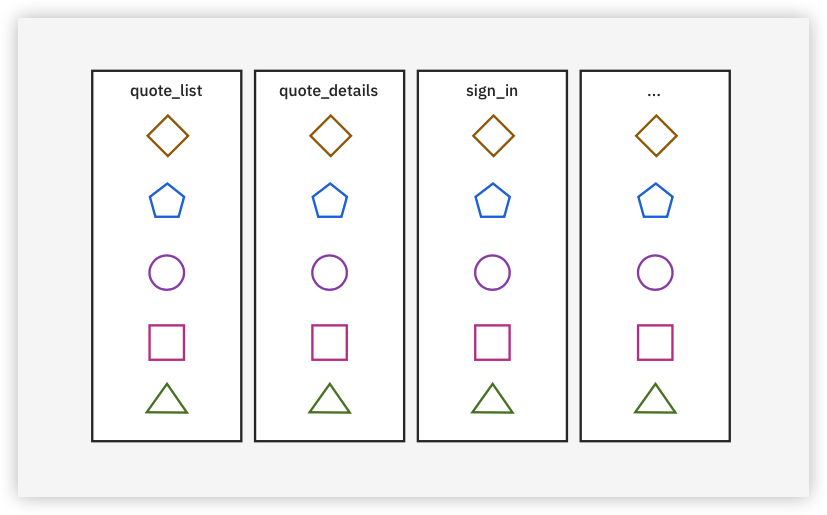
Advantages:
- With a package-by-feature approach, finding files is a breeze. The structure of your codebase now mimics the design of your app.
- It scales well. As the number of files grows, the number of packages grows accordingly.
- The codebase becomes self-documenting. At a glance, you have an idea of how big the app is and what it does.
- You have complete visibility control. For example, now quote_list_bloc.dart can only be visible inside the quote_list package.
- It offers smoother onboarding. You only have to understand the feature you’re working on.
- You get clearer squad ownership. Each subteam knows exactly which packages it’s responsible for.
- It’s easy to conduct experiments and migrations. Want to try a new state management approach? No problem. Restrain it to a single feature package and no one else has to worry about it.
Disadvantages:
- It promotes the creation of the so-called common package — a package that developers usually create to hold all the code used by more than one feature. This might seem good in theory. In practice, the common package becomes a giant dumpster of files that are completely unrelated to one another.
- There’s a higher risk of code duplication. If you need something that’s already implemented in another feature, there’s a chance you either don’t know about it or don’t want to take on the burden of moving it to the common package, so you just create another version.
- It demands a certain cognitive load when deciding where to place a file. “Should it be inside that package? Should I create another package for it? Should it be inside common?”
Now that you know how both package-by-layer and package-by-feature work, can you guess which one WonderWords uses?
Your answer is correct if you said neither… or both.
Packaging by Convenience¶
As you’ve seen, both approaches have pros and cons. Package-by-layer works best for files that aren’t tied to a single feature, like databases and networking stuff. In contrast, package-by-feature shines for files that are rarely reused, like screens and state managers.
So, why not mix both and create packages as you find convenient instead?
Note
“Convenient” may sound sloppy but, as you’ll see, that’s the opposite direction of where you’re heading.
Finally, this is how WonderWords’ package distribution really is:
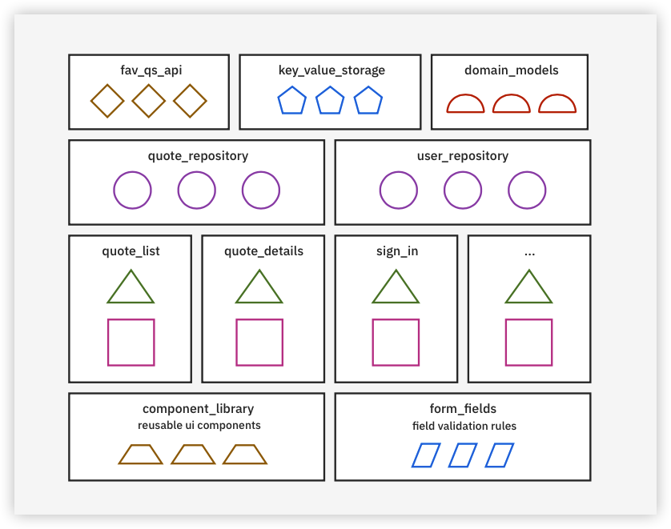
Notice that some packages are feature-based, like quote_list, quote_details and sign_in. In contrast, all the other packages represented above are layer-based, like key_value_storage and component_library.
These are the four commandments governing WonderWords’ package distribution:
1. Features get their own package
For this command, you follow the package-by-feature approach. But what’s a feature?
For some people, a feature is a screen; for others, it’s a flow of related screens. Furthermore, formal definitions will tell you that a screen can gather many features, like a home screen. At the same time, a feature can span out across different screens, like an e-commerce checkout process. Sounds complex, right?
Luckily, you don’t have to be that dogmatic. Here, you’ll consider a feature to be either:
- A screen.
- A dialog that executes I/O calls, like networking and databases. WonderWords’ forgot_password package falls into this category.
Other than that, if it’s just a dummy UI component that you want to share between two or more screens, like a search bar, you should place it inside the component_librarypackage.
2. Features don’t know about each other
When screen A wants to open screen B, it doesn’t import screen B and navigate to it directly. Instead, screen A’s constructor receives a function that it can call when it wants to open screen B. In the end, the main application package will connect the wires.
To give you a concrete example from WonderWords, when the QuoteListScreenwants to open the QuoteDetailsScreen, it just calls the onQuoteTap callback it received in its constructor.
3. Repositories also get their own package
Chapter 2, “Mastering the Repository Pattern”, will explain repositories in depth. For now, know that they’re classes responsible for retrieving and sending data by coordinating different sources, like the network and a database.
For example, in WonderWords, user_repository coordinates between network and database calls to send and retrieve the user’s information.
4. No common package
Repeat with me: No common package.
When you need to share something between two or more packages, you’ll create a more specialized package to handle that. Five of your packages originated from this rule:
- component_library: Holds UI components that either are, or have the potential to be, reused across different screens.
- fav_qs_api: Since both user_repository and quote_repository talk to your remote API, it makes sense to create a separate package for it.
- key_value_storage: Same story as fav_qs_api, but this one wraps your local storage.
- domain_models: You can expect that repositories will need to start sharing models or custom exceptions at some point. Therefore, it’s a good thing to have a separate package for your domain models right from the start.
- form_fields: Contains field validation logic that different features share.
Notice how you could have easily dumped these into a single common package, but instead, you ended up putting them into six different specialized packages.
Note
Don’t worry if you find all this overwhelming; the following chapters go through each of these commandments in detail.
Hopefully, that was enough to hype you up for what’s yet to come. Now, you’ll go through the steps you need to run the app for yourself.
Learning About API Keys¶
WonderWords wouldn’t be a real-world app if it didn’t talk to a remote API. And, for a book that carries “real world” in its title, it couldn’t just be any API. It needed one that offers features that are in demand: paginated listing, details, token-based authentication, sign up, the ability to favorite quotes and so on. That’s how this book ended up with FavQs.com.
FavQs.com is an online quote repository with both web and mobile apps — and it also provides a completely free remote API.
Note
A big shout-out to Scott Gose, the creator and maintainer of FavQs.com. His work has contributed to this book in more ways than he can imagine.
Even though FavQs.com is a free API that anyone can use, it needs a way to identify the apps that send them requests. That gives them a way to ban abusers — generally, people using bots to overload their servers with a massive number of requests.
Most public APIs, including FavQs.com, do that by asking developers to register on their website to get a code called an API key. Developers must then include that key in the header of any HTTP request they make. If, down the road, the API admins notice lousy behavior coming from that key, they can quickly ban it.
An API key is for your app what emails and passwords are for your users.
Getting an API Key¶
To get your key, sign up at FavQs.com, then go to the API keys page and click Generate API Key. Copy the generated key and paste it wherever you can easily find it. You’ll use it shortly.
Storing the API Key¶
OK, now you not only know what an API key is, but you also have one in your hands. Your next step is knowing where to put it in the project.
Considering you have to send the key inside your HTTP headers, the first idea that might come to mind is to store it in the code itself. Something like this:
final appToken = 'YOUR_API_KEY';
options = BaseOptions(headers: {
'Authorization': 'Token token=$appToken',
});
// Omitted code.
As it turns out, that approach has a crucial downside: Now, everyone who has access to your code can see what your key is — and can use it for malicious purposes. That risk becomes even more apparent if you use a public GitHub repository.
Note
Crackers actually go the extra mile and set up bots that scan public repositories day and night. They can find keys within minutes of someone posting them.
Welcome to your first real-world problem: storing static sensitive keys. The solution? Compile-time variables.
Storing Your API Key in a Compile-time Variable¶
Navigate to packages/fav_qs_api/lib/src and open fav_qs_api.dart.
Note
You’ll find two files with that name inside the package: one under liband another under src. Make sure you open the one inside src.
Look at setUpAuthHeaders at the end of the file:
void setUpAuthHeaders(UserTokenSupplier userTokenSupplier) {
final appToken = const String.fromEnvironment(
_appTokenEnvironmentVariableKey,
);
options = BaseOptions(headers: {
'Authorization': 'Token token=$appToken',
});
// Omitted code.
}
That’s where you set up your headers. Focus on that String.fromEnvironment(). It’s telling Dart to look up a value inside a compile-time variable called fav-qs-app-token.
Compile-time variables are nothing but values you have to pass to Dart when commanding it to run your app. You do that by specifying the dart-define parameter when using flutter run to run your app, like so:
flutter run --dart-define=fav-qs-app-token=YOUR_KEY
With that approach, everyone that wants to run your app has to provide their own key. The best part is that the code remains untouched. You can still share keys with your team, but they’re not exposed in the code anymore.
But, you probably don’t use the command line to run your app. Right? Don’t worry. Next, you’ll see how to configure your IDE to handle your dart-defines for you so you don’t have to specify the key every time.
Note
Follow the instructions below based on the IDE you use.
Customizing Android Studio’s Running Configs¶
At the top of your screen, click main.dart, then Edit Configurations….
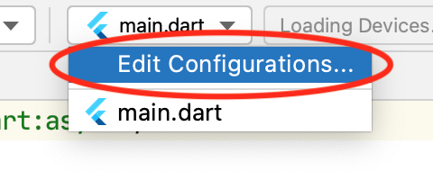
When you first open a project with Android Studio, it creates a default running configuration for you and calls it main.dart — because, well, it executes the main.dartfile.
In the Additional run args field of this default configuration, enter --dart-define=fav-qs-app-token=YOUR_API_KEY — but replace YOUR_API_KEY with the actual key you got from FavQs.com. The result will look like this:
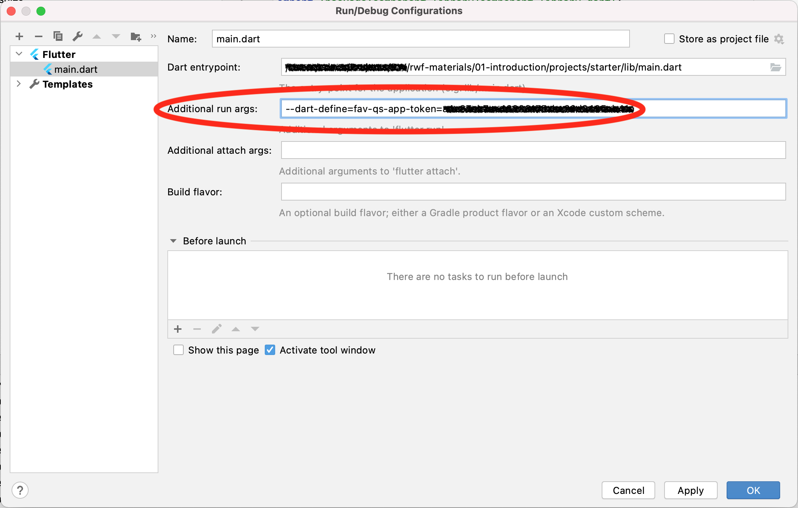
Finally, click OK.
Customizing VS Code’s Running Configs¶
Click Run and Debug on the left-side panel, then click create a launch.json file. Finally, select the Dart & Flutter environment.
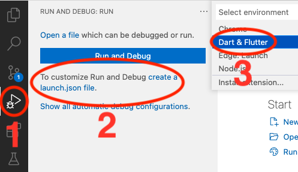
Notice that VS Code created and opened a launch.json file, which defines the different setups you can choose from when asking the IDE to build and run the app for you. Replace its contents with:
{
"configurations": [
{
"name": "WonderWords",
"request": "launch",
"type": "dart",
"program": "lib/main.dart",
"args": [
"--dart-define",
"fav-qs-app-token=YOUR_API_KEY"
]
}
]
}
Don’t forget to replace YOUR_API_KEY with your actual key from FavQs.com.
Save the file. Notice that you now have a new configuration to pick when running the app.
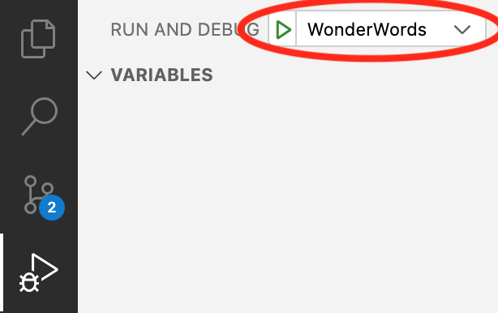
That’s all for the API key. The next step in your onboarding journey is setting up Firebase’s console for WonderWords.
Note
Setting up Firebase’s console is mandatory to run the app in all the following chapters. As tempting as it may sound, especially if you already know Firebase, please don’t skip it.
Configuring Firebase’s Console¶
I’m probably not lucky enough to be the one introducing you to Firebase for the first time. But, just in case I am: Firebase is a platform from Google that pulls together a whole bunch of remote tools that make the app development life cycle smoother.
Firebase’s useful capabilities range from equipping corporate apps with a device farm to execute tests all the way to helping front-end developers create remote APIs without writing back-end code. Nearly all professional apps use Firebase.
WonderWords relies on Firebase for all the typical use cases in mobile apps: dynamic links, analytics, crash reporting, feature flags and A/B tests. You’ll cover these topics in later chapters, but since you need the configuration in place to run the app, you’ll handle that part now.
Creating a Firebase Project¶
Start by opening Firebase’s console and signing in with a Google account. Then, click Create a project if you haven’t used Firebase before, or Add project if you have.
For the project’s name, enter wonder-words. If this is your first time using Firebase, make sure you check I accept the Firebase terms. Click Continue, then Continue again on the next screen.
Now, for the Configure Google Analytics screen, keep the default values. Select I accept the Google Analytics terms, then confirm by clicking Create project.
Once Firebase finishes creating your project, click Continue for the last time. If everything goes well, you’ll see your project’s dashboard. You’ll visit this page a lot, so feel free to bookmark it.
The Firebase project you just created doesn’t stand on its own; it serves only as a container for one or more Firebase apps, which you’ll create next. For WonderWords, two apps are necessary: one for Android and another for iOS. Below, you’ll find separate instructions for each. Be aware, though, following the Android instructions is optional if you’ll only use iOS devices to run the app – or vice versa if you’ll only use Android devices.
Adding an iOS App¶
While still on your project’s dashboard, click the iOS button near the center of the page. Then, for iOS bundle ID, enter com.raywenderlich.wonderWords and click Register app.
Firebase will now generate a configuration file for you. The Firebase SDK in your code will read that file later to know exactly where to point to for all of Firebase’s services you decide to use in your app.
Download the file by clicking Download GoogleService-Info.plist. Then, click the Xbutton at the top-left corner to skip the remaining steps and go back to the home page.
Note
The other steps are instructions for setting up native apps. They don’t fit your use case, so you’ll strike out on your own.
Open Xcode, then click File ▸ Open… on the toolbar. Select the Runner.xcworkspacefile in your project’s ios folder. Finally, click Open.
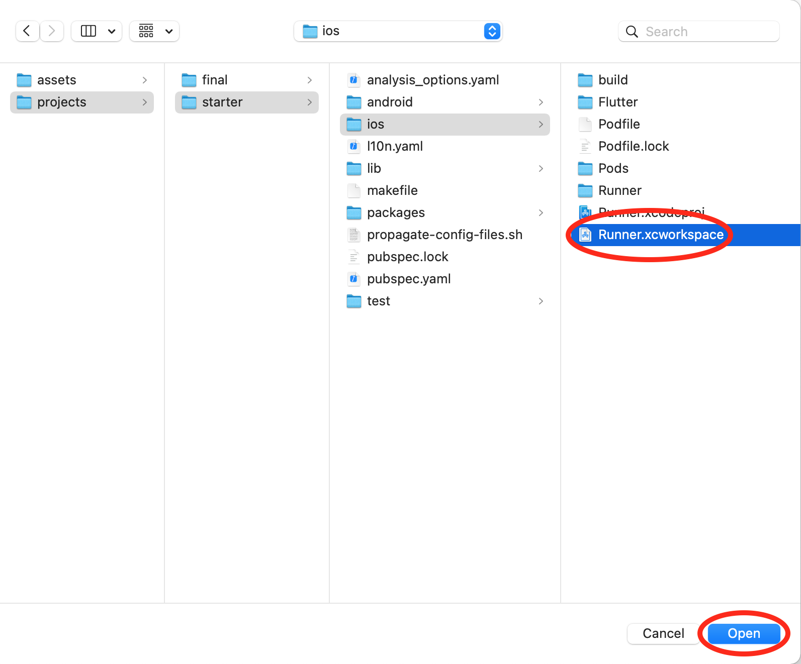
Once Xcode finishes opening, drag and drop your downloaded GoogleService-Info.plist into the Runner folder of your project in Xcode.
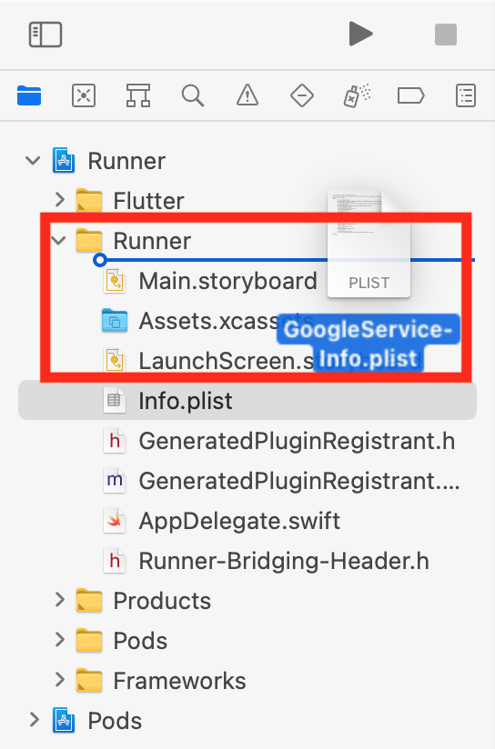
Note
This has to be done through Xcode for it to change your project’s configurations. Don’t try to manually copy and paste the file using the Finder app.
In the window that pops up next, make sure you’ve selected Copy items if needed and click Finish.
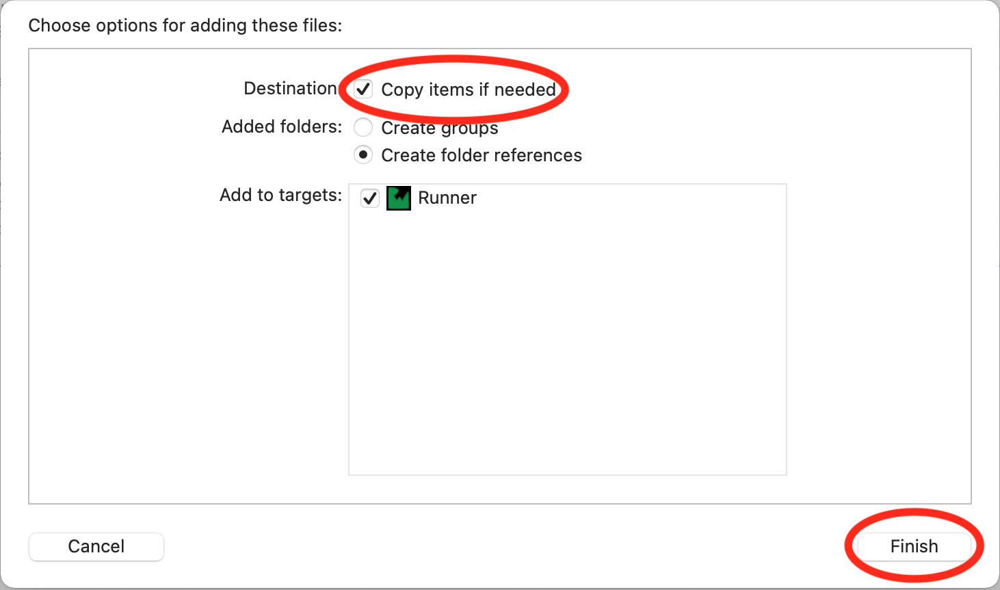
That was all! You can close Xcode now and get back to VS Code or Android Studio.
Adding an Android App¶
Now, you’ll handle the Android side of things. On Firebase’s console home page, click + Add app near the top of the page, then select the Android icon.
For the Android package name, enter com.raywenderlich.wonder_words. Then, click Register app.
Firebase will give you another configuration file: a .json file this time. Click Download google-services.json and, once again, skip the remaining steps. This time, paste the file in android/app.
Running the App¶
It’s party time! Use the custom running configuration you created a few sections ago to build and run your app. When you’re done, you’ll see something like this:
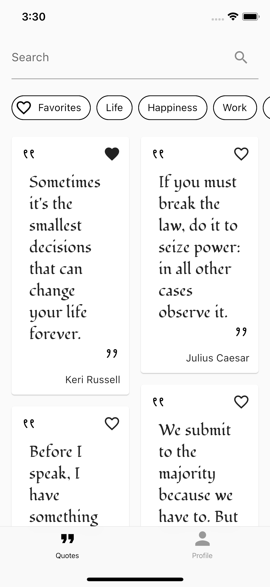
Spend some time getting familiar with WonderWords. You two have a long road ahead of you.
Propagating the Configurations to the Following Chapters¶
As an outcome of this chapter, you added a few configuration files to your starter project:
- One or two Firebase configuration files, depending on whether you configured it for both platforms (Android and iOS).
- A
.ideaor.vscodehidden folder. Exactly which of these you have depends on the IDE you use. This folder is where the IDE generated your custom running configuration with the API key compile-time variable.
The problem is, you’ve only added these files to the first chapter’s starter project, but you’ll need them in place for all of the following chapters’ starter and final projects as well. Without those files, you can’t run the app.
You could just go ahead and manually copy-paste the files to their respective paths in all the other projects, but you’re talking about at least two projects for each chapter in the book. The good news is you don’t have to do that manually; your project contains a shell script that automates everything for you.
If you’re on macOS or Linux, run the script by re-opening the Terminal tab in your IDE. From there, execute the following command: sh propagate-config-files.sh. If you’re on Windows and don’t know how to run shell scripts, you can follow this tutorial.
The script assumes you haven’t separated your starter project from the rest of the materials. If you did, you’ll experience errors using it.
Note
Propagating the configuration files, whether manually or by using the script, is a mandatory step. Without it, you won’t be able to build and run the app in any of the following chapters.
Congratulations and welcome aboard!
Key Points¶
- Splitting the codebase into multiple local packages is an incredible way to enforce separation of concerns, promote cleaner APIs, allow experiments, isolate mistakes, manage dependencies better, avoid merge conflicts and much more.
- You don’t have to choose between the feature-by-layer and feature-by-packagearchitectures; a mixed approach is often the best.
- Creating a common package is a bad practice. Create more specialized packages instead.
- An API key serves as your app’s credentials for accessing a remote API, similar to a login and password.
- Don’t store API keys in your code because anyone can read them. An alternative is using compile-time variables.
Where to Go From Here?¶
This chapter included everything you could expect from a real-life onboarding: It presented the architecture, the app and the configurations you need to run it.
Before you proceed, make sure you get to know WonderWords very well as a user. Also, feel free to spend some time getting familiar with the general pieces of the architecture — but be careful not to get frustrated if you don’t grasp how something works right away. Starting from the next chapter, you’ll learn everything you need to know about these topics, building the confidence you need to apply any of these patterns like they’re second nature to you.
Have fun!